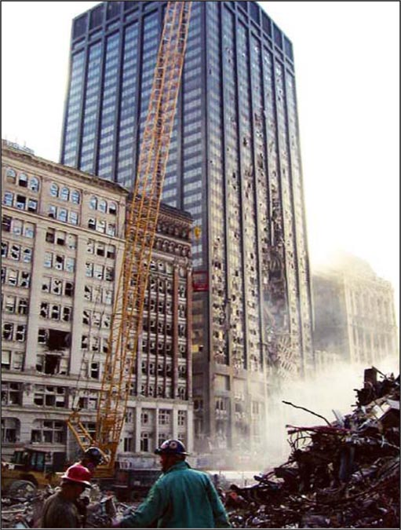

|
Comment 22
Issue: Effects on WTC7 compared with effects on Bankers Trust
Location: Page 82-4 of 404 of pdf (labeled page 38-40 of report), http://wtc.nist.gov/media/NIST_NCSTAR_1-9_Vol1_for_public_comment.pdf
|
After Debris Impact
After the dust and smoke cleared following the collapse of WTC 1, damage to WTC 7 was observed primarily on the south face near the southwest corner, between Floors 5 to 17 (Section 5.5). Seven exterior columns were severed (six columns on the south face and one column on the west face). The interior damage was not visible but, based on engineering judgment and interview accounts by individuals that were in or around WTC 7, estimates of interior structural damage between the exterior walls and the core were made. Chapter 5 describes the damage observed from photos and videos, and the structural damage in the southwest region is summarized in Section 5.5.3.
The WTC 7 structural damage resulted from debris falling from WTC 1. In a similar fashion, the building located at 130 Liberty Street (referred to as Deutsche Bank or the Bankers Trust building), was damaged by falling exterior panels from WTC 2 as it collapsed. NIST was granted access to inspect floors where damage occurred in the building on 130 Liberty Street on August 21 and 22, 2006. The debris from WTC 2 had penetrated the north face of the 130 Liberty Street building and caused damage to Floors 9 through 22, as shown in Figure 2-30 and Figure 2-31. The north face had severed spandrel beams between exterior columns, with the damage extending into the interior that grew in magnitude as the debris fell. Figure 2-31 shows that the floor beams framing into intact exterior columns remained in place, but the SFRM in the immediate vicinity of the damage was knocked off.
Figure 2-32 shows the extent of the damage that was documented by the FEMA WTC Building Performance Study (McAllister 2002). Immediately after the damage was incurred, the ceilings and column enclosures were still in place, so possible SFRM damage in other parts of the building could not be observed.
|
Figure 64. [emphasis added]
Page 82 of 404 of pdf (labeled page 38 of report), http://wtc.nist.gov/media/NIST_NCSTAR_1-9_Vol1_for_public_comment.pdf |
Reason for Comment: It was assumed that falling debris caused the damage in Bankers Trust, but the evidence is not consistent with this conclusion. There has not been a full investigation of the damage to Bankers Trust. There is little debris visible in the open "gash." There is a recognizable "wheatchex" (a unit of three outer columns, three stories tall) presumably from WTC2. This "wheatchex" does not exhibit the level of damage even tool steel might have if grinding out the amount of material that is missing. The damage in Bankers Trust is consistent with molecular dissociation resulting from the use of an energy weapon. This information has been presented to NIST (2/29/08), previously, including the continuing reaction implies that this effect is non-self-quenching, exposing the public to continuing danger. In that correspondence, I noted that "[t]he destruction of WTC7 exhibited nearly all of the same characteristics as the destruction of WTC1&2. Noting that many of the contractors are the same, so it is likely that NIST's ongoing investigation of WTC7 may be dangerously and fraudulently flawed to such a degree that if it is not halted and if the current contractors are not removed, then the problems associated with the cover-up of the fact that the World Trade Center was destroyed by directed energy weapons may continue to multiply." The original correspondence is attached here. [FletcherMcAllister.pdf] [080229_AFFIDAVITtight.pdf]
According to FEMA, there were no fires in this building.
|
6 Bankers Trust Building
6.1 Introduction
The Bankers Trust building at 130 Liberty Street, also referred to as the Deutsche Bank building, withstood die impact of one or more pieces of column-tree debris raining down from the collapsing south tower (WTC 2). Although the debris sliced through the exterior façade, fracturing spandrel beam connections and exterior columns for a height of approximately 15 stories, the building sustained only localized damage in the immediate path ofthe debris from WTC 2 (hereafter referred to as the impact debris) (Figures 6-1 and 6-2). There were no fires in this building. [emphasis added] The ability of this building to sustain significant structural damage yet arrest the progression of collapse is worthy of thorough study. Unlike WTC 1, 2, and 7, which collapsed completely, the Bankers Trust building provided an opportunity to analyze a structure that suffered a moderate level of damage, to explain the structural behavior, and to verify the analytical methods used. The following sections describe the building structure, the extent of damage, and the computational methods that were used to analyze the structure.
6.2 Building Description
The Bankers Trust building is a steel-frame commercial office structure, designed and constructed circa 1971. Bankers Trust was designed by Shreve, Lamb & Harmon Associates P. C. Architects; Peterson and Brickbauer Associated Architects; the Office of James Rudderman Structural Engineers, and Jaros Baum and Bolles Mechanical and Electrical Engineers. The building measures 560 feet in height with 40 stories above grade and 2 below. It is located directly across Liberty Street from the former site of WTC 2, about 600 feet due south of the southeast corner of WTC 2.
Figure 6-1
North face of Bankers Trust building with Impact damage
between floors 8 and 23.
Photo credit: FEDERAL EMERGENCY MANAGEMENT AGENCY
|
|
|
| Figure 69. In buckling a beam deforms into (a) a half sine wave, p , or (b) a full sine wave, or 2 p . The random deformation in (c) is not associated with buckling. |
Figure 70. A close-up view of an I-beam in Figure 68. Source: http://www.fema.gov/pdf/library/fema403_ch6.pdf, FEMA6-10_ccc.jpg |
This steel connection from Banker's Trust is very deteriorated.
Suggestion for Revision: NIST acknowledges that its comparison of effects on WTC 7 with those occurring to the Bankers Trust building may be challenged as being fraudulent by Dr. Judy Wood.
|